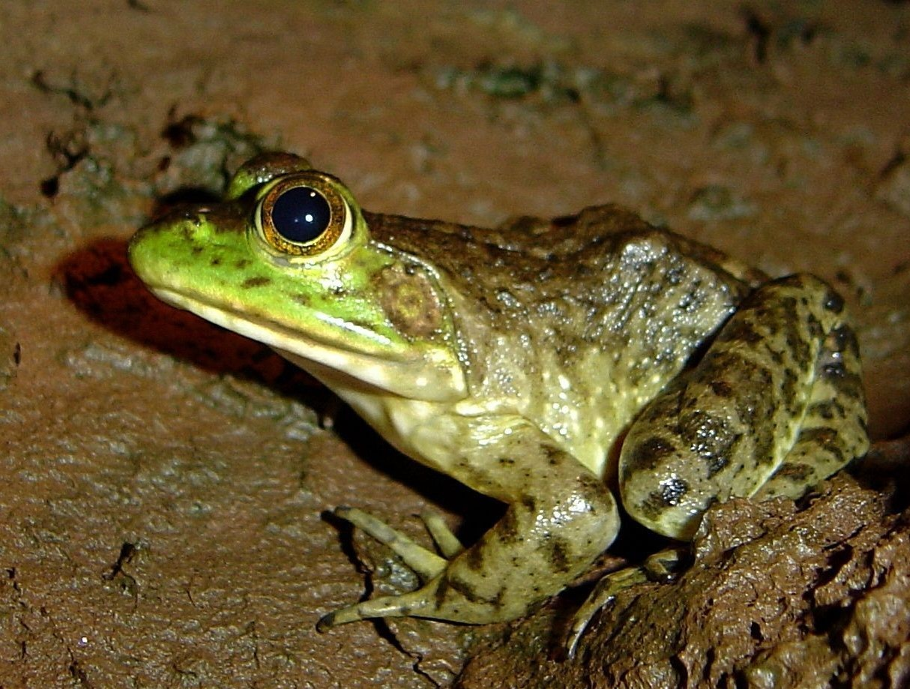

| Rã | |
|  | |
| Gênero: | Rana |
| Principais características: | Pele lisa e húmida, patas traseiras maiores e com membrana interdigital (pé-de-pato) e pula mais alto do que os sapos. Habita lagoas e pântanos, captura suas presas utilizando sua língua extremamente pegajosa, sua saliva é um líquido não-newtoneano, amolecendo para abraçar a presa e endurecendo logo em seguida para não a deixar escapar. |
| Ameaça: | Normalmente não representa perigo. |
As rãs são anfíbios de pele fina e húmida, patas fortes e dedos longos e por isso conseguem saltar mais alto do que os sapos. Em geral, alimentam-se de caramujos, lesmas e insetos e não possuem muitos meios de defesa sendo presas fáceis de peixes carnívoros, aves pernaltas e cobras e por isso são essenciais nos ambientes onde vivem, servindo como consumidores primários e secundários nas teias alimentares. A reprodução começa no fim do inverno, logo após a ibernação, durante esse período a fêmea põe de 2.000 a 3.000 ovos que irão dar a luz a girinos em cerca de uma semana e meia. As rãs também são muito cobiçadas pelos seres humanos por causa de sua carne, que é muito saborosa, a carne de rã(ou gia) é amplamente consumida na culinária francesa, por exemplo, e por isso existem diversos criadouros mundo afora.
Como lidar com uma rã em sua casa?
Assim como os sapos, é comum na primavera que as rãs procurem refúgio em ambientes domésticos, principalmente em locais húmidos e quentes, como banheiros ou espelhos d`água, nos quais podem acabar ficando presos caso a borda seja difícil de escalar e acabam se afogando.
Com as mãos limpas, ou usando luvas, pegue a rã pelas pernas cuidadosamente, para não machucar o animal: Assim, ele não fugirá de você e nem irá o ferir. Você também pode usar um pote de vidro limpo para capturá-la, é importante também que o pote tenha ventilação caso for deixar ele fechado por um tempo. Assim que possível, solte o bichinho em algum lugar seguro, de preferência perto de uma fonte de água natural como um córrego ou riacho, para que ele possa retornar à natureza.
Segundo biólogos, algumas rãs possuem venenos que podem prejudicar a saúde e que dependendo da espécie pode ser letal para os humanos, no entanto, apenas se entrar em contato com as mucosas bucais, dos olhos e nariz, ou em contato direto com a corrente sanguínea. Por isso, ao entrar em contato com uma espécie desconhecida, mantenha as mãos longe dos olhos e boca e lave com água e sabão.
Rana leptodactylidae
Rana ridibunda
Contatos:
+55 (66) 99983-5588
pedro.miranda.estudante@bag.ifmt.edu.br
dyovana.araujo.estudante@bag.ifmt.edu.br